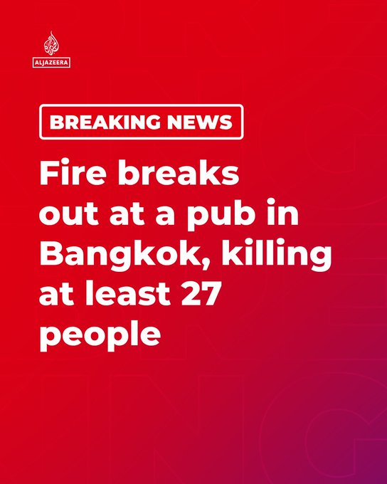

@AJENews
📝 原文: BREAKING: A huge fire has engulfed a pub in Bangkok, the capital of Thailand, early in the morning and has killed at least 27 people, officials say.LIVE updates:https://aje.news/5bytp7
🇨🇳 译文: 突发：官方称，泰国首都曼谷的一家酒吧凌晨发生大火，已造成至少 27 人死亡。实时更新：https://aje.news/5bytp7


🕒 2026-07-12T19:26:25+00:00